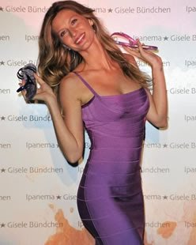
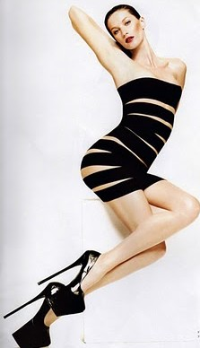
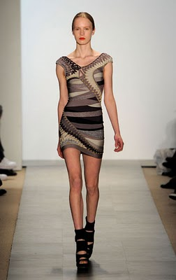
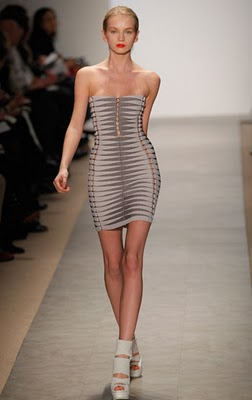
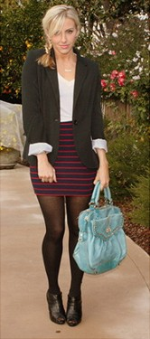
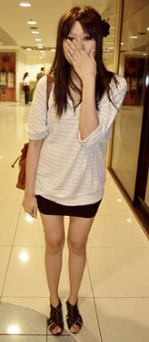
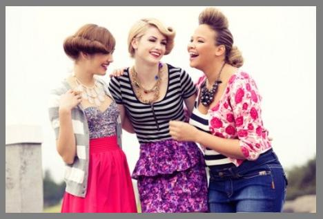
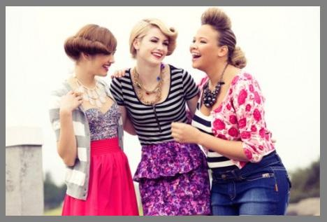

Hoje vamos falar da super moda Bandage. Por mais que digam que o shape bandage está ultrapassado e out, essa moda ainda é muito vista por aí em festas e baladas a fora, sejam noturnas ou diurnas.
Definitivamente o mundo contemporâneo da moda se curvou a esta tendência. Atualmente, ultra conhecido e super coladinho ao corpo, o shape da moda bandage com ajuda da cintura alta modela as curvas deixando a mulher poderosa, sexy e super feminina.
|  |  |
| Foto: Nahh Moda | Foto: Girlystuffs |
As peças no estilo bandage são super versáteis, e dependendo dos complementos escolhidos para coordenar com elas, podem ser usadas para eventos diurnos ou noturnos, como formaturas, baladas, jantares informais e onde mais você se permitir.
E se você realmente for adepta à elas, fique atenta, essa moda continua em alta, como mostrou os desfiles do SPFW para outono/inverno 2011.
|  |  |
| Fotos: Moda Brasil Tour | Bandage no SPFW! |
A famosa bandage, marca registrada da Hervé Léger ,virou a queridinha das celebridades.
 |
 |
 |
|
Isabeli Fontana |
Gisele Bundchen |
Elle Macpherson Foto: Mdmulher |
As peças de modelagem bandage, permitem fáceis combinações e looks bem legais, expondo a sensualidade feminina na medida certa. Caso tenha dúvidas se o seu tipo físico permite que suas curvas fiquem em evidência, coordene a sua saia ou o seu vestido bandage com peças mais larguinhas. A melhor opção para não exagerar e não errar é realmente o equilíbrio. O segredo é não ultrapassar aquela famosa linha tênue entre o sexy e o vulgar... Dosando tudo, relaxe e curta esta moda clean que virou febre e ajuda a modelar nossos "corpichos" permitindo facilmente diversas composições.
|  |  |  |
| Foto: Seventhings | Foto: fashionistasbr | Foto: Seventhings |
Na dúvida de qual cor usar? As cores em tom nude são a grande sensação da estação. Abuse delas com sandálias e bolsas em tons mais fortes
 |
|
| Foto: Meninas no salto | Foto: Agito Curitiba |


 
